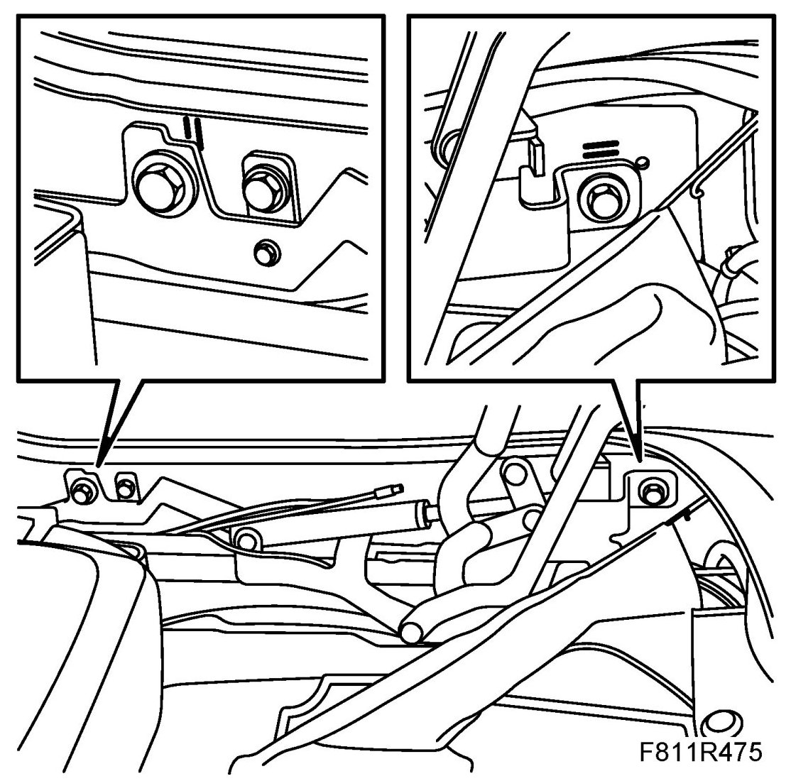
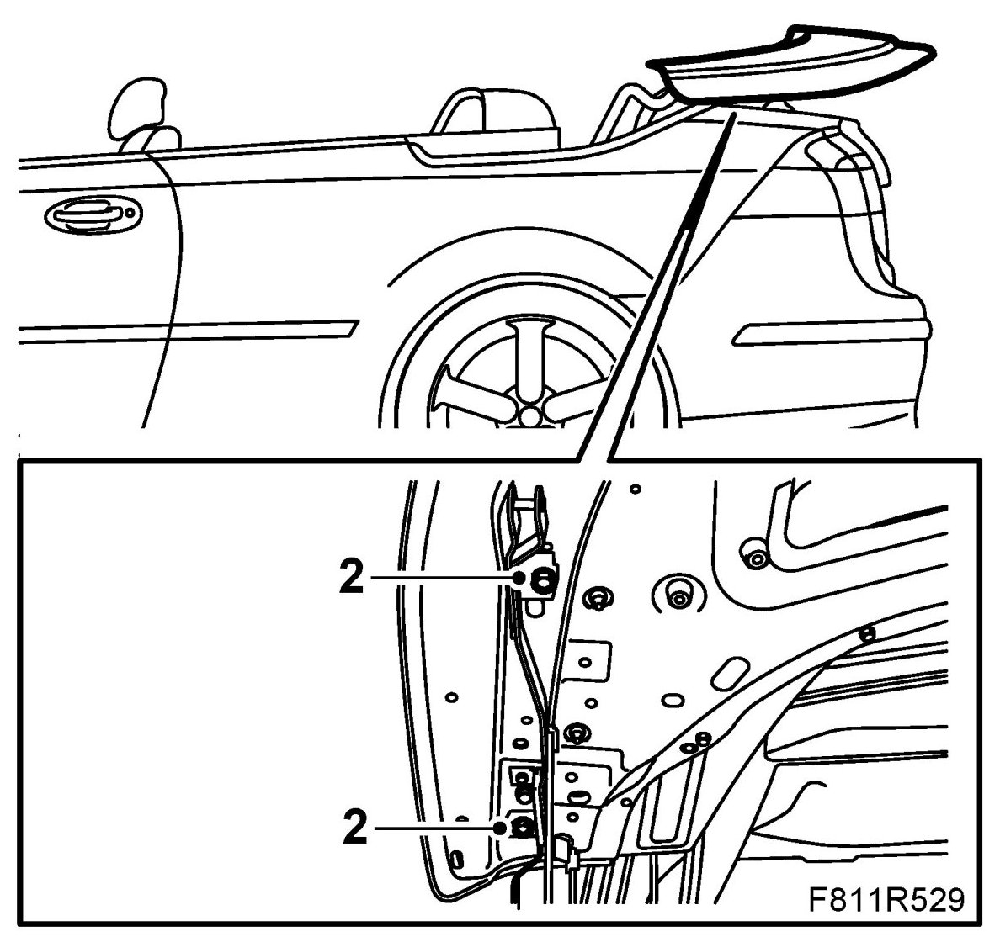

Adjustment, Soft Top Cover
Adjustment, Soft Top Cover
Adjustment, upward, downward (backward, forward is also possible)
If the soft top cover is too high or low, proceed as follows:
1. Open the soft top completely.
2. Measure how much the soft top cover deviates from its correct position.
3. Open the soft top cover.
4. Mark the position for the guide pin attachment.
5. There is a graduation to facilitate adjustment. Loosen the hinge bolts and guide pin screws until the hinge can be adjusted.

6. Adjust the soft top cover hinge to the desired position and fit the bolts.
7. Close the soft top cover and check the adjustment.
8. Operate the soft top to check the function of the soft top cover.
Adjustment, lateral, backward, forward
1. Open the soft top and leave the soft top cover open.

2. Loosen the soft top cover bolts and the screws for the guide pin attachment until the soft top cover can be adjusted with the hinge. The rearmost bolt has a graduation to facilitate adjustment.
3. Close the soft top cover slowly and carefully.
4. Align the soft top cover by adjusting it until the gap is the same all round.
5. Open the soft top cover.
6. Tighten the soft top cover bolts and the screws for the guide pin attachment.
7. Close the soft top cover and check the adjustment.